Deep dives
A longer explainer every week.
-
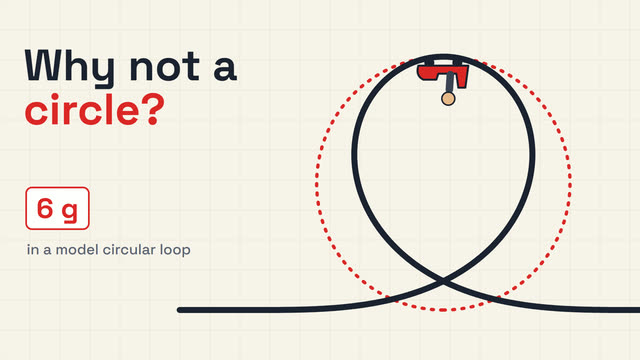
Why Aren't Roller Coaster Loops Perfect Circles? -
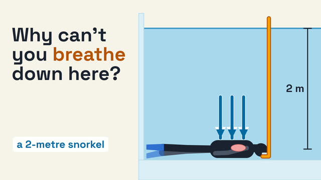
Why Can't You Breathe Through a 2-Metre Snorkel? -
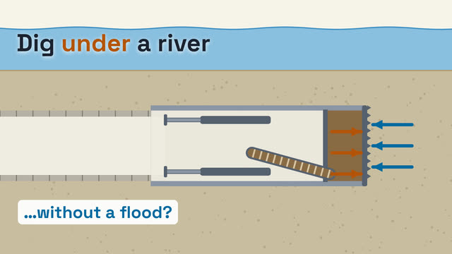
How Do You Dig a Tunnel Under a River Without the River Pouring In? -
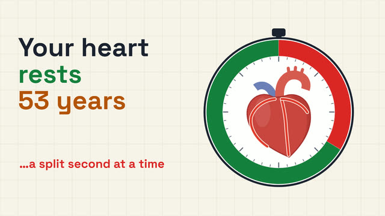
Your Heart Beats 3 Billion Times and Never Rests. Why Doesn't It Get Tired? -
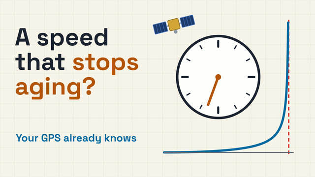
Is There a Speed Where You'd Stop Aging? (Your GPS Already Knows)
Latest Shorts
A new question most days, answered in under a minute.
-
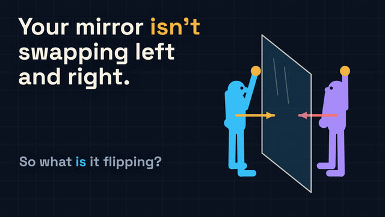
Why Does a Mirror Swap Left and Right but Not Up and Down? -
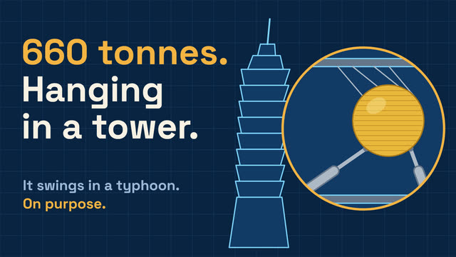
Why Is a 660-Tonne Steel Ball Hanging Inside One of the World's Tallest Skyscrapers? -
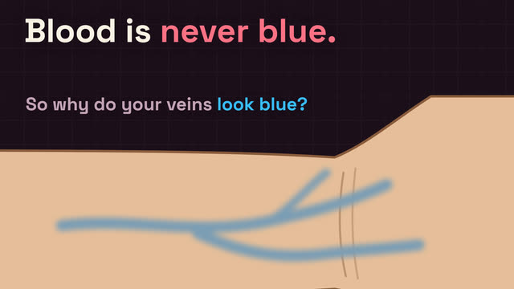
Your Blood Is Never Blue. So Why Do Your Veins Look Blue? -
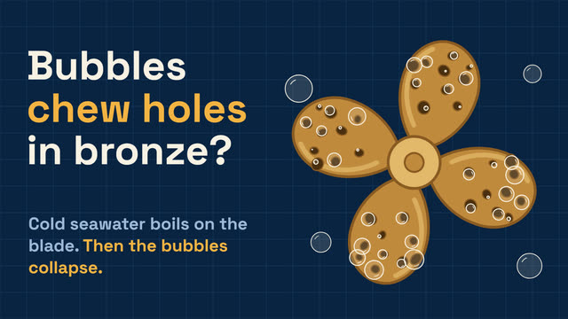
Why Do Bubbles Chew Holes in a Bronze Ship Propeller? -
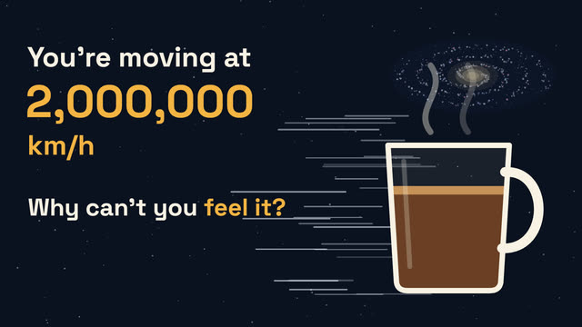
You're Moving at 2 Million km/h Right Now. Why Can't You Feel It? -
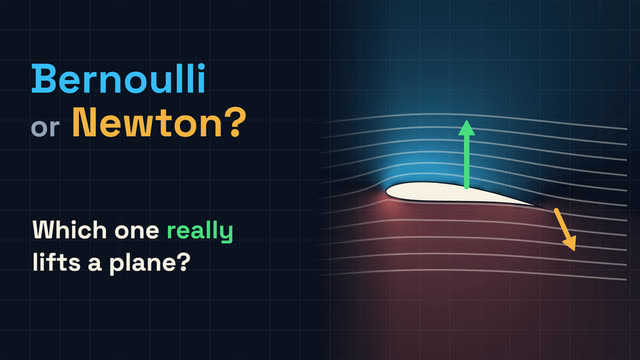
Bernoulli or Newton: Which One Really Lifts a Plane? -
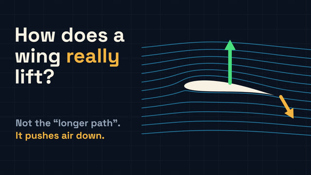
How Does a Wing Actually Lift a Plane? (Your Textbook's Answer Is Wrong) -
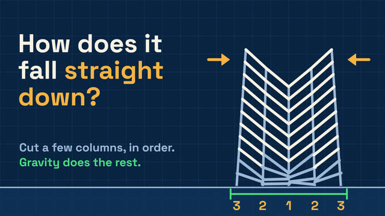
How Can a Building Fall Straight Down Into Its Own Footprint? -
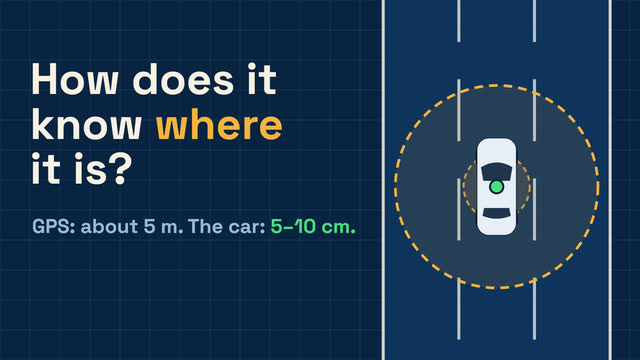
How Does a Self-Driving Car Know Where It Is to Within a Few Centimetres? -
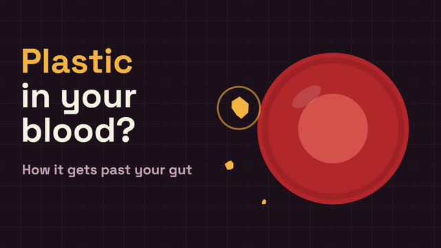
Microplastics Are in Your Blood. How Do Plastic Bits Get Past Your Gut? -
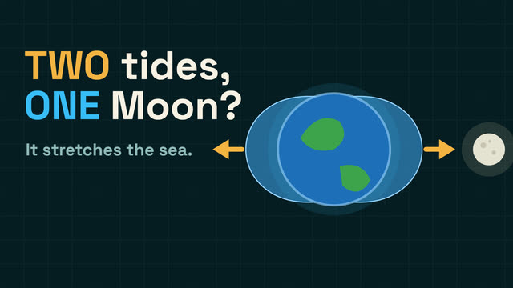
Why Does the Ocean Have Two High Tides a Day When the Moon Only Passes Once? -
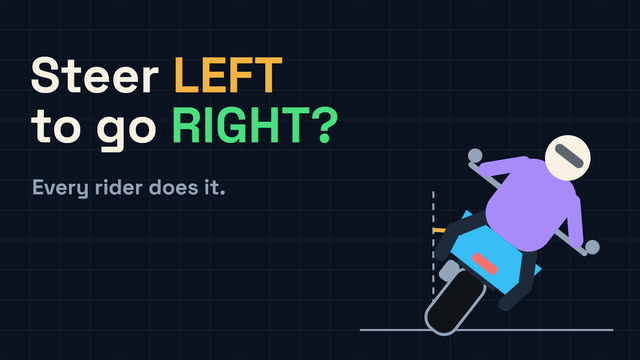
Why Do You Steer LEFT to Turn a Motorcycle Right?
Books
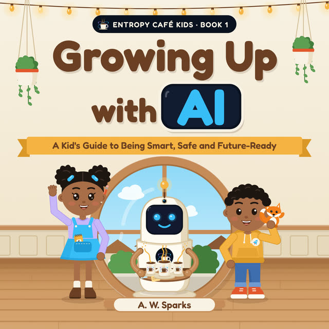
Entropy Café Kids · Book 1 · Ages 5 to 8
Growing Up with AI
A warm, honest picture book that gives children a friendly first look at what AI is, and how to use it smart, safe and kind. Zara, Sami and Bit the helper robot find the answer over a cup of cocoa at the Entropy Café.
Coming next: 365 Cups of Curiosity, a year of science questions for grown-ups.
About
Entropy Café started with a simple idea: the best science questions are the ones you already wonder about. Why does a mirror swap left and right but not up and down? What really lifts a plane? Why can't you breathe through a long snorkel?
Each video takes one question and works through it with animation, from the everyday puzzle to the real answer. New Shorts arrive most days and a deeper dive every week. Pull up a chair. The universe is brewing.